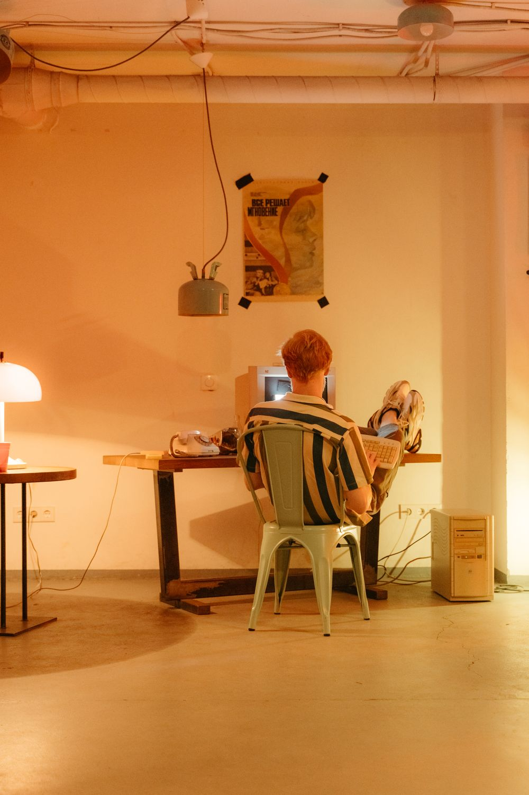
1999
From a family beginning in June 1999 to our next chapter in Georgia.
Meet Vroooom1999 — 2024
A family beginning. A lasting commitment.
Hover, focus, or tap a card to explore. Press Escape to return.
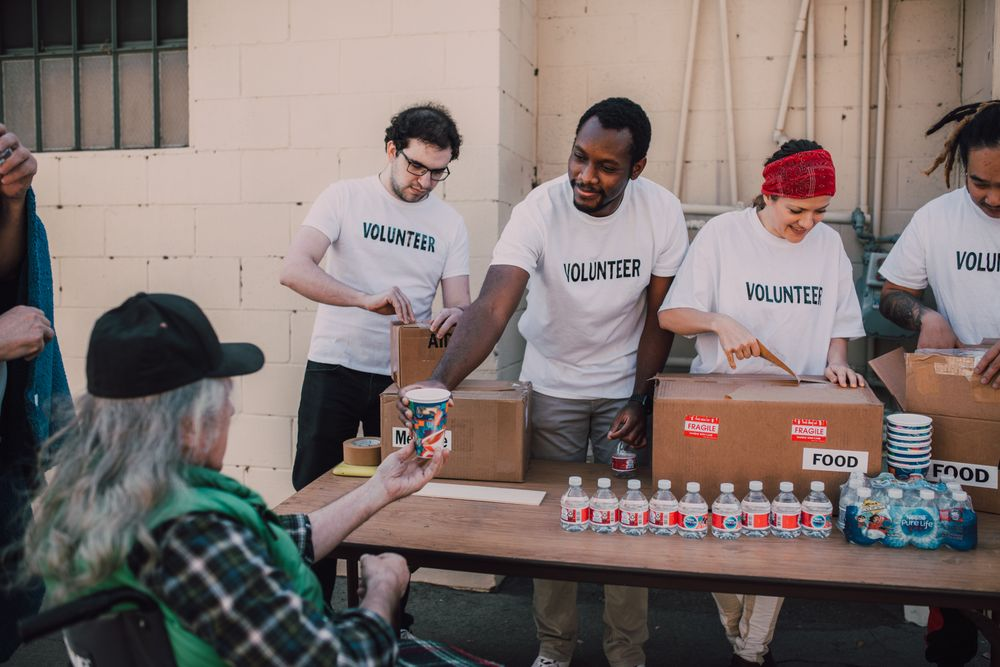
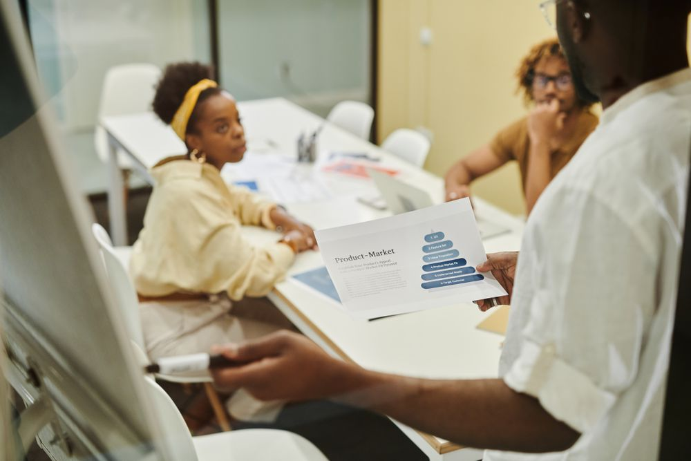
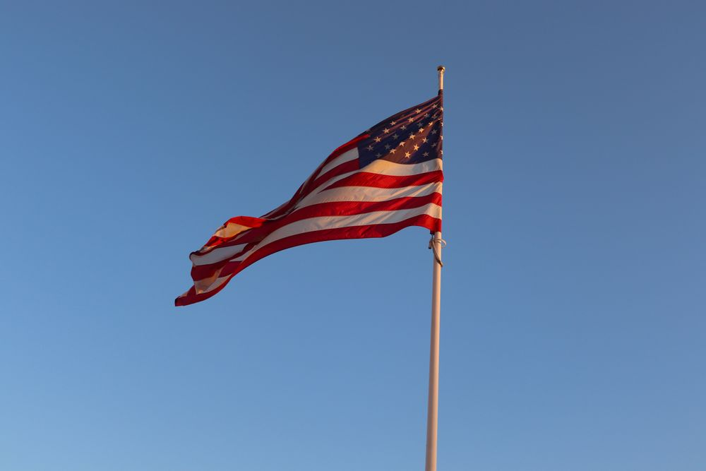
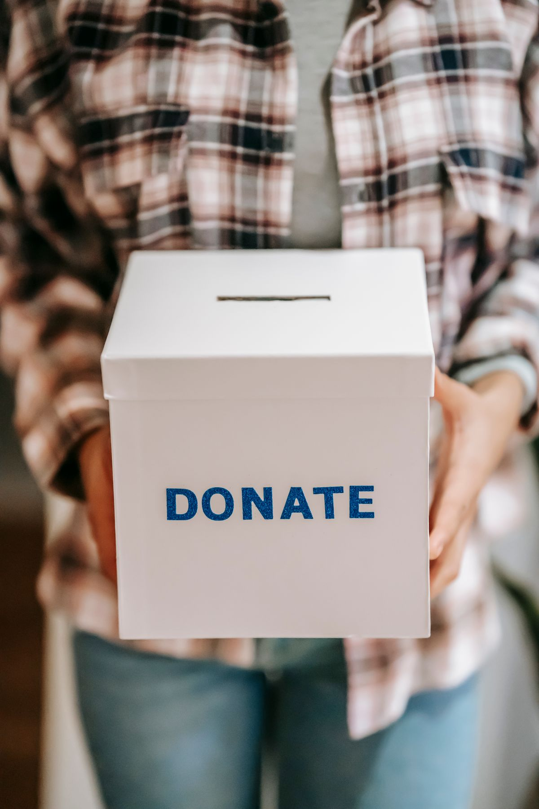
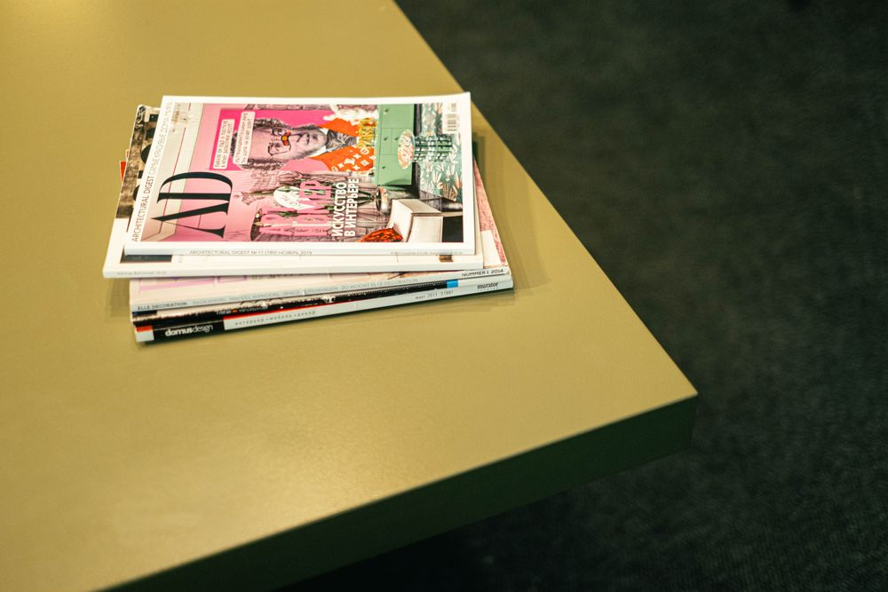
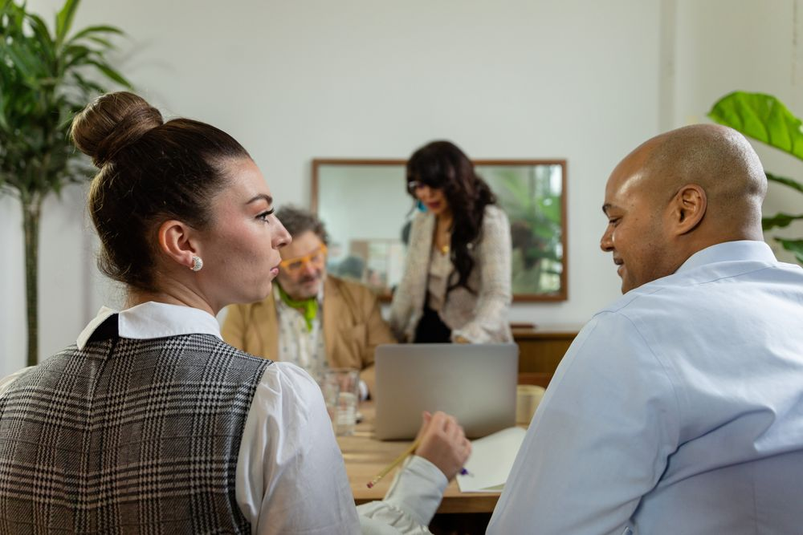
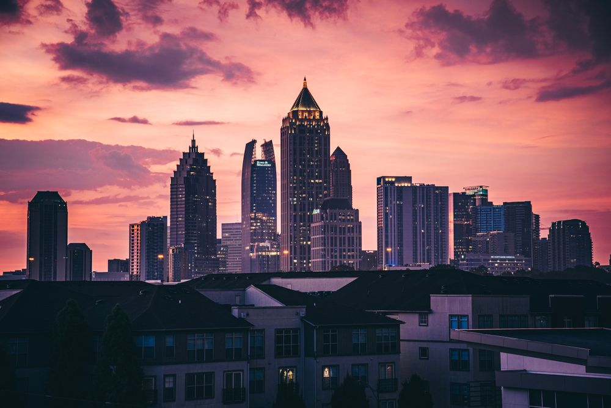
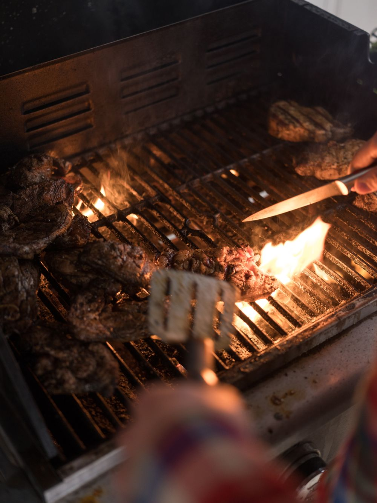

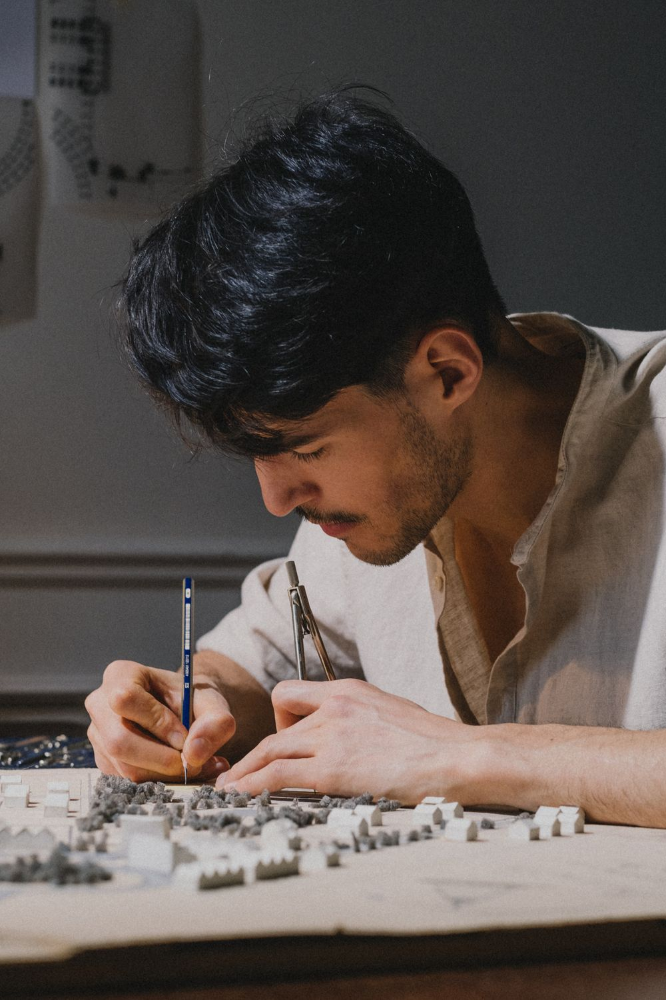


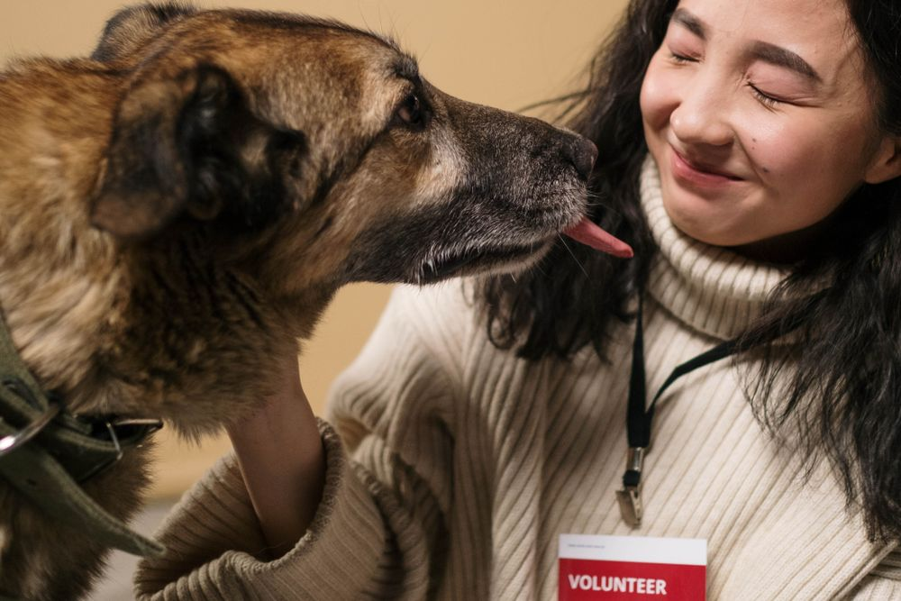

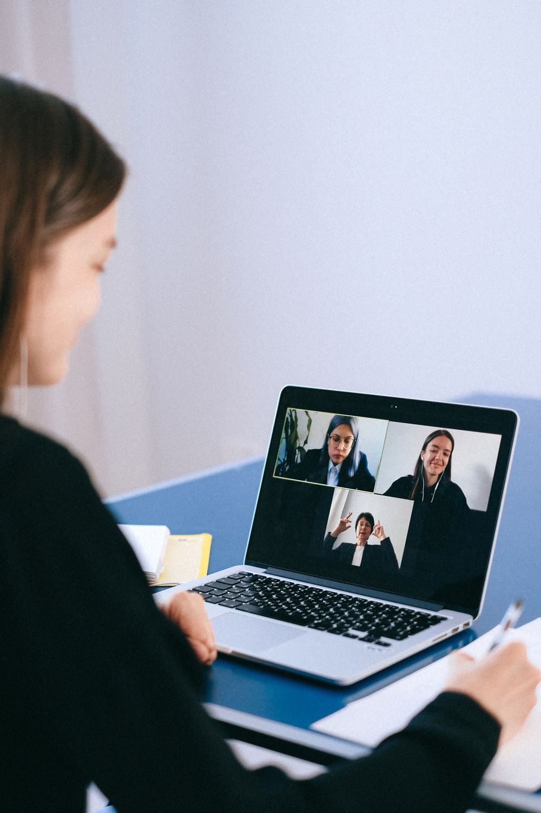
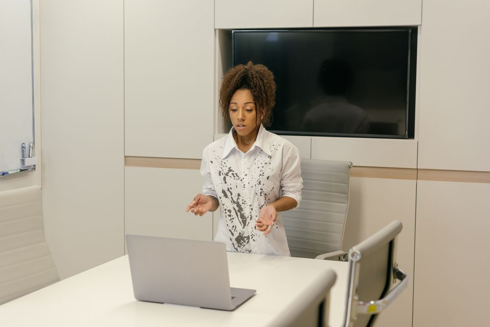
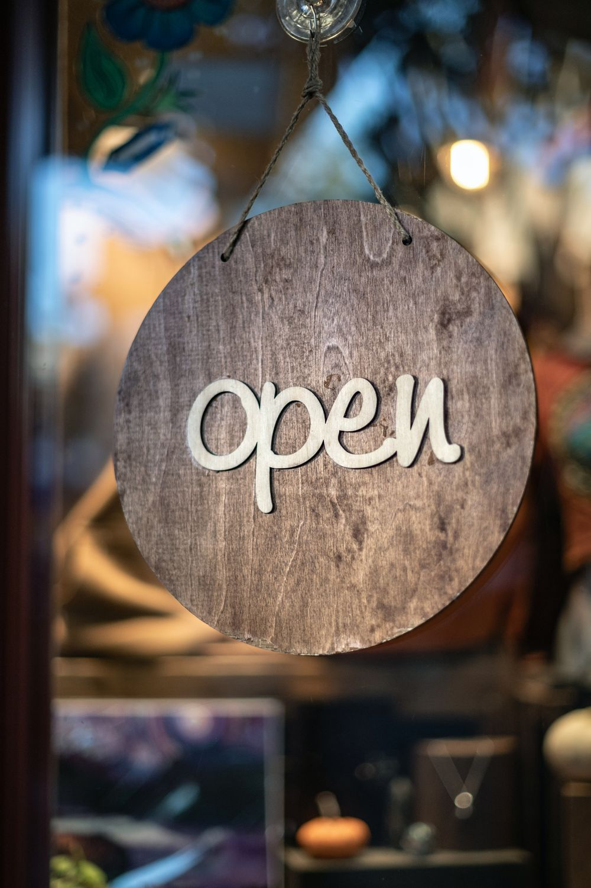
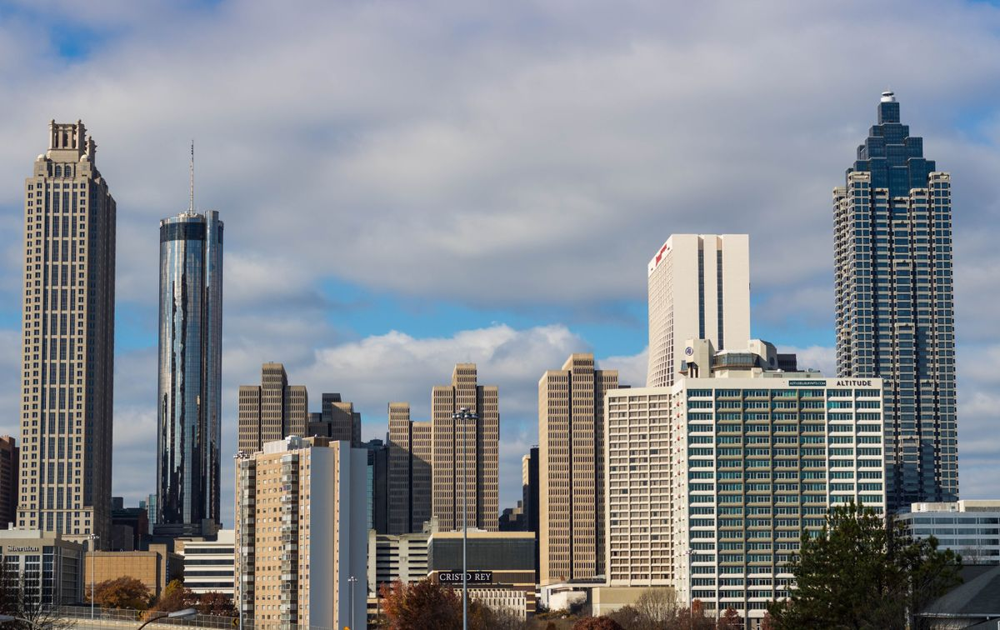